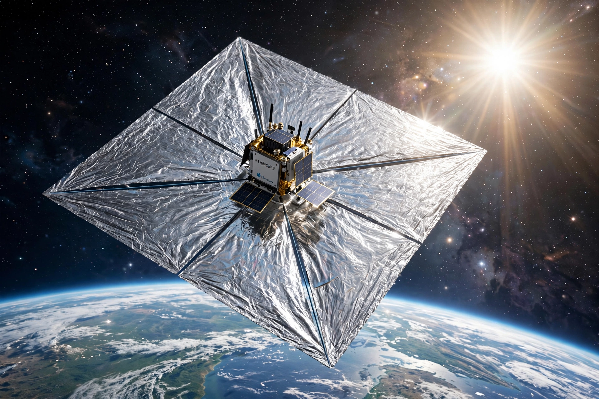

| Operator | The Planetary Society |
|---|---|
| Type | Solar sail technology demonstration |
| LightSail 1 | Launched 20 May 2015 |
| LightSail 2 | Launched 25 June 2019 |
LightSail is a project to demonstrate controlled solar sailing using CubeSats developed by The Planetary Society, a non-profit space advocacy organisation co-founded by Carl Sagan. Sunlight pressure on a large reflective sail provides propulsion without fuel.
LightSail 1 (formerly LightSail-A) launched on 20 May 2015 aboard an Atlas V with the X-37B. After initial communication problems, it deployed its sail on 7 June 2015, took test images, and re-entered the atmosphere on 14 June, completing its shakedown mission.
LightSail 2 launched on 25 June 2019 on a SpaceX Falcon Heavy as part of the STP-2 mission, carried inside the Prox-1 spacecraft. On 23 July 2019 it successfully deployed its 32-square-metre Mylar sail and subsequently raised its orbit using sunlight alone, demonstrating controlled solar sailing in Earth orbit. It re-entered in November 2022.
The spacecraft is a 3-unit CubeSat with four triangular sail segments made of aluminised Mylar, deployed by cobalt-alloy booms. Cameras, sun sensors, and momentum wheels allow orientation control to maximise orbital energy gain.